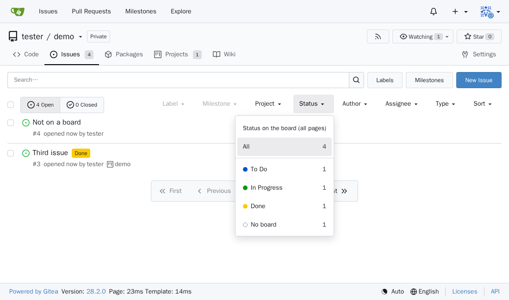

gitea-board-badges
See the project board column of every issue in Gitea's issue list, and filter the whole list by it.
To DoIn ProgressDone
See the project board column of every issue in Gitea's issue list, and filter the whole list by it.
